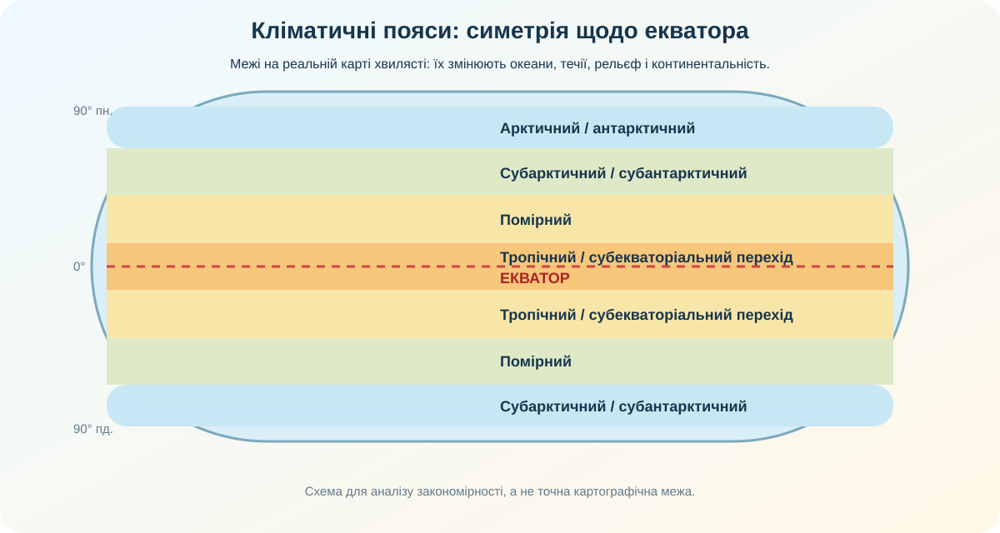
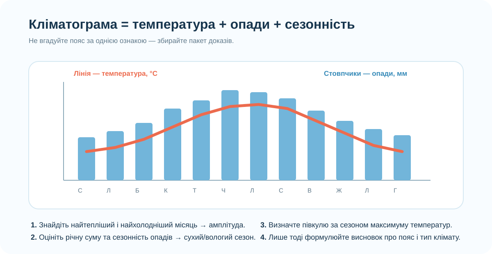

1. Дослідницьке питання
Як із широти, температурного режиму й сезонності опадів передбачити кліматичний пояс — і чому пояси повторюються в обох півкулях?
Широтна зміна температури.
Просторовий розподіл опадів.
Кліматограми з різних широт.
2. Реальні дані: де на Землі випадає більше опадів?

NASA/GSFC Scientific Visualization Studio, Global Precipitation Climatology Project: середні січневі опади за багаторічними спостереженнями.
Знайдіть найвологіші смуги поблизу екватора. Чи тягнуться вони рівно по паралелі?
Порівняйте Сахару, Амазонію та Південно-Східну Азію. Яка різниця в зволоженні?
Чому широта важлива, але сама по собі не пояснює всі відмінності?
3. Інтерактив: широта → очікуваний кліматичний пояс
Пересувайте повзунок. Це навчальна модель, тому межі приблизні. На реальній карті вони зміщуються через океани, течії, рельєф і конфігурацію материків.
Високий кут падіння сонячних променів, сильне прогрівання протягом року, висхідні потоки повітря.

Схема показує широтну симетрію, а не точні картографічні межі.
4. Кліматограма як доказ, а не картинка

Оберіть станцію. Графік будується в браузері з навчального набору місячних температур і опадів. Ваше завдання — не вгадати місто, а встановити пояс за набором ознак.
5. Пастка: «пояс» ≠ «однаковий клімат усюди»
Океанічний вплив і західне перенесення пом’якшують сезонні контрасти.
Велика віддаленість від океану посилює континентальність і річну амплітуду.
Однаковий кліматичний пояс може містити кілька типів клімату.
6. Чи змінюється клімат Землі зараз?

NASA Earth Observatory / GISS. Карта показує аномалію температури відносно базового періоду 1951–1980, а не абсолютну температуру.
Чи означає переважання помаранчевих і червоних тонів, що кожна точка Землі нагрілася однаково?
NASA повідомляє: глобальна середня температура 2025 року була на 1,19 °C вищою за середнє 1951–1980; 2024 рік залишився найтеплішим у ряду спостережень з 1880 року.
7. Коротке відео: побачити зміну в часі
NASA Climate Change / Goddard. Дивіться не заради цифр останнього року, а щоб побачити просторово-часову закономірність зміни температурних аномалій.
8. Теорія — після дослідження
| Пояс | Головна ознака | Що відрізняє типи клімату |
|---|---|---|
| Екваторіальний | Високі температури весь рік, мала річна амплітуда, рясні опади. | Локальні відмінності зволоження, висота, рельєф. |
| Субекваторіальний | Тепло весь рік, виразна сезонність опадів через сезонне зміщення повітряних мас. | Тривалість вологого і сухого сезонів. |
| Тропічний | Високі температури; великі площі сухих областей біля субтропічних максимумів тиску. | Континентальний, морський, вплив течій. |
| Субтропічний | Перехідний режим: сезонна зміна панівних повітряних мас. | Середземноморський, вологий субтропічний, континентальний тощо. |
| Помірний | Виразна сезонність температур, західне перенесення. | Морський, помірно континентальний, континентальний, мусонний. |
| Субполярний і полярний | Низькі температури, коротке прохолодне літо або його фактична відсутність. | Віддаленість від океану, морські течії, льодовий покрив. |
Ключова ідея: кліматичні пояси мають широтну закономірність і приблизну симетрію щодо екватора, але не є ідеальними смугами. Тип клімату формується комбінацією широти, циркуляції атмосфери, океанічних течій, віддаленості від океану та рельєфу.
9. CER — доведіть твердження
Твердження: «Симетрія кліматичних поясів щодо екватора — реальна закономірність, але не точне дзеркальне відображення».
10. Домашня робота
Опрацюйте тему про кліматичні пояси, типи клімату, кліматограми та глобальні зміни клімату.
Оберіть два міста на близьких широтах, але на різних материках. Знайдіть їхні кліматограми й поясніть щонайменше дві причини відмінностей клімату.
11. Підсумковий тест — 10 балів
Тест відкривається лише після введення даних учня/учениці.